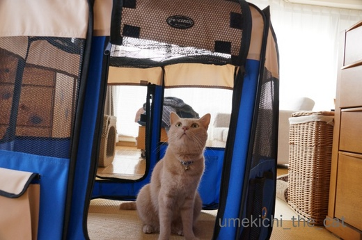
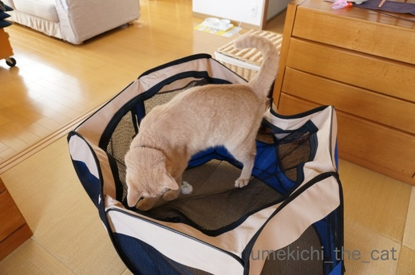

トンネルは暫しの夏休み [梅吉]
あんなに気に入っていたキャットトンネルですが
連日35℃を超えるようなった頃から突然興味を失っちゃった梅吉さんw
薄い生地とはいえ空気がこもった感じがして不快なんでしょうか・・・
なのでキャトトンネルには夏休みを取ってもらうことに。
代わりにサークルが登場しましたよー。
年に一度の虫干しの意味もあるのでちょうど良い！

もちろんすぐにチェックに来る梅吉さん＾＾

出入り口では手もちょっと使います。
のれんをくぐってるみたいですよね( ´艸｀)

天井部分にレジ袋の丸めたのを投げると大喜び。
去年もこうやって遊んだよね梅吉さん。思い出した？
2018年 ぽんぽん大会
（26秒です）

盛り上がって来ると上に乗っちゃいますよー。

ああ、崩壊５秒前・・・
サークルごとひっくり返って興奮して家の中をずだだだだだだだだだー(^_^;)
崩壊したサークルでテンションが高まるようで、ますますエキサイトする
夏の日の梅吉さんでしたw
夏から秋口にかけて北海道オホーツク海側を中心に捕れるエビ、
北海シマエビ。
全国的な認知度はどのくらいなんだろう・・・
夏になると捕れてたてのエビを浜で釜茹でしたものが出回ります。
普通のゆで海老は１〜２匹で食べ飽きちゃいますが
これは手が止まらなくなっちゃいます。
これが食卓に登場すると「ああ、夏休み」という気持ちにもなる
北海道の夏の食べ物です。
ウニに続いてふるさと納税でゲット！
この日は泡でいただきました＾＾

カフェオレ色の梅吉

梅吉 2023年8月10日 永眠


梅吉と出会った譲渡会

犬猫の理由なき殺処分ゼロ
妄想広告
UMEKICHI 光

爆発的に早い！
時々攻撃的！
Thanks to Mr.Boss365
爆発的に早い！
時々攻撃的！
Thanks to Mr.Boss365

梅吉さん♪大興奮ですねぇ～！
なんて楽しそうな遊びなんでしょう(*^-^*)
サークルの上なんて
不安定なのに、それがまた
楽しいのかもしれませんね♪
by きぃ (2018-08-02 06:31)
こういう遊び方ができるんですね。
確かに上に乗って遊ぶのは想定外で
それ用の設計になってないかも＾＾；
by ぽちの輔 (2018-08-02 06:55)
梅吉さん、ジャンプ！ジャンプ！楽しいね^^
by ニコニコファイト (2018-08-02 07:25)
梅吉さん、楽しそう♪( ´▽｀)
怪我＆ご近所にあまり迷惑をかけさえしなければ、
崩壊しようが家の中をハイテンションで飛ぶように走り回ろうが
ニコニコ見守っちゃいますよねぇ( ^ω^ )
by ニッキー (2018-08-02 08:15)
色んな遊び方があるもんだー。
元気があってよろしいっ(≧∀≦)
by よーちゃん (2018-08-02 08:23)
この遊び方、バレーボールでもないし、運動会の玉入れでもないし、
逆モグラ叩き？ いや、違うし、今までにない遊び方のような・・・
ぜひ名前を付けて競技化し、梅吉杯争奪世界大会の開催を(〃'∇'〃)
by middrinn (2018-08-02 08:39)
おはようございます。
暖簾をくぐる梅吉君も板に付いてますね！！手慣れた感じします！！
２０１８年ぽんぽん大会！！
梅吉君の押し上げ手つきが微妙に違う？力加減？片手？両手？・・・
小生・猫ばかには「学習してる感じ」が興味深いです！！
ちぃさん宅の食卓！！北海道美味しいもの大会ですね！！
または、北海道納税祭りです！？(=^･ｪ･^=)
by Boss365 (2018-08-02 11:35)
梅吉くん器用に暖簾くぐってますね～。
これを見てたらうちの猫ドア、暖簾にしたくなっちゃったよｗ
ポンポン大会！
ジャンプするたびに鈴の音がチリンチリンって可愛いね(*^-^*)
2018年夏の大会。もちろん優勝は梅吉くん！
興奮しすぎて、何の競技だかわからなくなっちゃうって言うのが
梅吉くんらしいね。最後はダダダダダーーだ～っ(≧▽≦)
by emi (2018-08-02 12:14)
楽しそう♪ぽんぽん♪
こんなお部屋あるんだぁ…知らなかったー＾＾
あ、崩壊…やっぱするんだｗｗ
それもまた良いなぁ＾＾
by 猫毬 (2018-08-02 12:14)
ぽんぽん大会、楽しそう(#^^#)
最後は蹴散らして逃走、そのせいでゆがんだテントや凹んだ猫ハウスが我が家にもあります^^;
イイ感じのサークルですね。狭いところ好きなのでちょっと入ってみたいです♪
とれたて釜茹で北海シマエビ、最高ですね！
相方も子供のころはバケツで毛ガニを食べていたとよく自慢します^^;
美味しいものはやっぱり北海道にありだな～。
by ゆきち (2018-08-02 12:31)
ぽんぽん、不安定だから、余計に楽しいのかにゃ♪
ああ、、シマエビ、目の毒です、、、。
by nachic (2018-08-02 13:21)
ポンポン遊び楽しいですね。梅吉杯争奪世界大会にうちからも参加させたいところですが、以前あった同じようなサークルは完全崩壊しました。複数で上に乗る中を掘るで、梅吉さんと一緒に遊ばせたら、中にいる梅吉さんが潰されてしまいまする。
by zombiekong (2018-08-02 13:31)
大会、楽しそうだにゃーﾍ(≧▽≦ﾍ) きゃーーん♪
いつも楽しいイベントがあって、シアワセね！
北海シマエビとシュワシュワ・・・極楽う～♡
by Ginger (2018-08-02 14:04)
梅吉君たのしそうだー^^
今年も登場のサークルですね♪
北海シマエビ、そういえばメジャーじゃないかもですね。
言われて気づいたわ(@@
見てたら口の中が海老モードになっちゃったよぉぉぉ
by リュカ (2018-08-02 15:05)
梅吉さん､期待を裏切りませんね。
本当に楽しそうに遊んでくれて、見ていてほっこりします(^^)
by kou (2018-08-02 17:20)
梅吉さん、ぽんぽん大会でジャンプしてますね！
北海シマエビ美味しそうに茹で上がっていますね(^^)
by ma2ma2 (2018-08-02 18:25)
サークル、すずしそうで良いですね。
ポンポン大会、梅吉選手やりますね〜
ルールを守って、天井から落とすまで、プロですなぁ〜
最後は梅吉さんがポンポンするのね。
崩壊もまた楽しでしょう。
シマエビ、美味しそうですね。
北海道は美味しい道（笑）
by kiki (2018-08-02 20:51)
暖簾をくぐる梅吉さん、「（店）やってるかい？」って感じ。^^;
ぽんぽん大会、楽しそうですね。
食べだしたら止まらない北海シマエビ、
ぜひ食べてみたいですー。
by yes_hama (2018-08-02 22:24)
梅吉ちゃん、トンネルお休み、夏休み”！
いいのよ、いいのよ！
メンテも必要。
がっかりすることなく元気良い梅吉ちゃん。
美味しいおやつを美味しくいっぱいもらって、
可愛い可愛いてアピールしましょうね。
北海シマエビ、これってネットで帰るんでしょうか。
あ、調べます。
我が家はグリニーズで舞い上がり、いまやっと鎮静化。
留まることのない、グリニーズ。
本当に教えていただいて、感謝でネコたちは撃沈爆睡。
えび、食べたいぃーーーーー。
by ake_i (2018-08-02 22:50)
梅吉さん、何かやってくれると思っていました。
期待通りです(^-^;
最後はぶっ壊すんですね(^-^;
by riverwalk (2018-08-02 23:01)
きぃさん＞
ぐらぐらしながら遊んでましたよー＾＾
そういえば私も子供の時そういう遊びが好きだった！
にゃんこも同じなんですね(^_－)☆
ぽちの輔さん＞
間違いなく想定外の使い方ですよねw
注意書きに「乗って遊ばないでください」って
書いてありそうですwww
ニコニコファイトさん＞
ジャンプ！ジャンプ！！楽しいんですよー＾＾
でも丸めたレジ袋がサークルから飛び出ちゃうと
「とってー！」と呼びつけられます (^_^;)
ニッキーさん＞
そうそう！
畳がボロボロになろうがフローリングに爪痕が残ろうが
レースのカーテンが破れようが
全く気にならなくなりました( ´艸｀)
梅吉元気だね！よかったね！！と褒めちゃうくらいですから(≧▽≦)
よーちゃん＞
なかなか楽しそうな遊び方でしょ？(≧▽≦)
この暑さ、伸びてる時間も長いですが
スイッチが入ると元気一杯の梅吉です＾＾
middrinnさん＞
この独創的な遊びはなんと名付けましょうか・・・
ウメボール？ウメビー？？ウメッカー？？？
やっぱりぽんぽんかなぁ・・・
ルールとしては何回ぽんぽん出来るかと
ぽんぽん時の独創性などの総合的評価としたいと思ってます(^_－)☆
Boss365さん＞
梅吉、のれんのある店に通い慣れているのかしら・・・
サークルの外にレジ袋が出ないようにも
学習して欲しいのですがそれは下僕が解決すると思っているので
手加減してくれないです(꒦ິ⌑꒦ີ)
我が家の食卓まさに「ふるさと」納税ですねー。
北海道は美味しい産地がわかっているので安心なんですよ＾＾
札幌市に納税したことはないですがw
emiさん＞
猫ドアがあるの？それもいいねー＾＾
うちは夏でも冬でもドアとか押入れとか開けっ放しだよw
ぽんぽん大会は、競技にゃん口が梅吉しかいないだろうから
今の所一人勝ちです(*>艸<)
競技ルールが梅吉都合でその都度変更されるから
なかなか普及しないかもー。
追いかけっこもね、追いかけ役のはずの梅吉が
逃げてる人（主におっと）を追い越して「あれ？」って
顔しながらも走り続けてます。
楽しければOKだけど！Ｏ(≧▽≦)Ｏ
猫毬さん＞
保護猫だった梅吉を迎え入れる条件の一つに
サークルorケージの準備があったのです。
梅吉が初めて留守番した時にこのサークルに入れて外出したんだけど
マジックテープ留めしてあった下部の隙間から脱出して・・・
その後もガムテープで補強してみたりしたのですが
やっぱり脱出してて・・・・
イリュージョニスト梅吉には通用しないと
部屋でフリーにさせて留守番させたら特にいたずらもなし。
以来このサークルはおもちゃとなりましたw
もともと折りたためるタイプだから崩壊にも強いのでーす(๑˃̵ᴗ˂̵)و
ゆきちさん＞
興奮するとなんでその辺のもの蹴散らして行くのでしょうね・・・
それが下僕の手足・お腹の時があるので辛いですw
蹴散らされた後の傷、おばちゃん治りが遅いのに^^;
サークルは153㎝の私には良い感じにフィットしましたよ！
（ええ、入りましたともw）
160㎝くらいは楽にイケそうですよwwwいかが？
私の子供の頃はカニの割り当ては一人一杯＾＾
時には２〜３杯なんてこともあって食べられなくても剥きなさいと
指令が出ましたー。
翌日カニ寿司やかに玉になって食卓に再登場(≧▽≦)
いまやカニは立派な観光資源なので
そんな贅沢はできなくなっちゃいましたけど・・・
nachicさん＞
予測のつかない動きって喜びますよねー＾＾
もっとも好き勝手にぽんぽんして玉（レジ袋丸めたの）が
遠くに行ってしまうと下僕が呼ばれますけどw
シマエビ、季節が終わっちゃいますよ！！（悪魔の囁き・・・）
zombiekongさん＞
おお！スットコランドでの梅吉杯争奪世界大会開催が良いですね＾＾
もールールなんて無しで誰が一番楽しそうだったかで競いますかw
中に入ってて潰されるんだなんてーＯ(≧▽≦)Ｏ
きっと梅吉、大喜びですよ(^_－)☆
（そういうのが好きな変態猫w）
Gingerさん＞
大会、全く開催されない時もあるんですが
開催されるととっても盛り上がりますw
楽しいイベントになるかどうかは梅吉さんの御心のままに〜。
次のシュワシュワはモッツアレラと桃がいいなぁ♡
リュカさん＞
今年も楽しそうに遊んでくれたよー＾＾
更に！サークルの下の隙間からじゃらしを狙う
楽しい遊び方も覚えたのでますますハッスルしてますw
北海シマエビは道外の居酒屋さんとかで
口にしたことは無いよねぇ・・・
売り込みに力を入れてるって話も聞かないから
現地の人は「知っている人だけ知ってる味」として
満足しているのかな＾＾
ま、近隣諸国に乱獲されたら困っちゃうしね(⌒_⌒;
kouさん＞
本当に楽しそうに遊ぶでしょう？＾＾
見上げるお目目が真剣そのものなのも笑えますよね！
ma2ma2さん＞
ぽんぽん（レジ袋丸めたの）と一緒にジャンプ、ジャンプ！です＾＾
シマエビは冷凍で届いたんですよー。
自然解凍で美味しくいただきました！
kikiさん＞
梅吉選手、大活躍なんですがルールは有って無い様なものなんですw
選手の御気分でその都度変わりますからー。
たった一つ変わらないルールはサークルの外に飛び出ちゃった
ぽんぽん（レジ袋を丸めたの）は下僕が拾うこと・・・
これが地味に忙しくて大変なんです( ･̆ˍ･̆ )
選手に喜んでいただいているので良いんですけどねwww
yes_hamaさん＞
のれん、梅吉通い慣れた感じですよね ( ´艸｀)
エビは本当に美味しいですよー。
晩御飯はこれとビール飲みなんてのもアリです＾＾
ake_iさん＞
あ、グリーニーズのコメ返しはake_iさんとこに
書いて来ちゃった( ´艸｀)
みなにゃん夢中のグリニーズ祭り何よりでした＾＾
シマエビは！
私はふるさと納税でゲットしたのですが普通にネットショップでも
扱っていると思います。
尾岱沼とか別海とかオホーツク側の海辺の町の
特産物ですよー。
これは白ワイン・泡・日本酒（これがベストマッチ？）
ビール何にでも合っちゃうニクイやつです。
ぜひぜひー(≧▽≦)
riverwalkさん＞
そうなんです！最後は蹴り倒してすっ飛んで行きます！！
梅吉ははずさない漢なんですよー(*>艸<)
by ちぃ (2018-08-03 14:21)
さすがにトンネルは暑かったですか。連日暑いですよね～～(T_T)
シマエビ美味しそうです！聞いたことありますが食べたことはないかも。北海道！いいな(*^^*)
by palpal (2018-08-03 14:41)
梅吉さん、楽しんでますね～♪
こういうのあること、知らなかった～(∀｀*ゞ)
私もあかりに買っちゃおうかな～( ´∀｀ )
by マーヤ (2018-08-03 21:19)
ポンポン遊び、だんだんエキサイトする様子がわかりますね(^.^)
最後は、乗っちゃうんだ〜 さらに破壊しちゃうんだ〜(@@;)
北海シマエビ、おいしそう♡ おっっっと、ヨダレが･･･
by のらん (2018-08-04 11:22)
梅吉さん、暖簾くぐって？出てくるとこ、いい感じです。
サークルで遊ぶの、めちゃ楽しそう～！
エキサイトして上に乗っちゃう、わかります♪
シマエビ、美味しそう‥＾＾
by sana (2018-08-04 23:39)
サークル、これってねこ用なのですか？（何に使うもの？？）
梅さま、ご機嫌ですね♪
北海シマエビ、おいしいですよね♡
エビは刺激が強すぎてあまり量を食べれらないのですが、これは大好き。
一度、函館の朝食で刺身に出会ったことがあります。ウマウマ♡
数年前、わたしもふるさと納税で取り寄せたのですが、その頃母が食べず
ひとりで消費したので、今でもまだ食べる気分になっていません^^;
by Ja-Kou66 (2018-08-05 00:33)
ちいさんが子供の頃好きだった遊びって
・・段ボール潰しとかですか(*ﾟ∀ﾟ*)？
ポンポン大会の球拾いして北海シマエビ
＆ビール、が夏の風物詩なんですね。
北海道の方は美味しいものをたくさん
ご存じなので、お取り寄せ情報を参考に
させて頂こうかな～(@^▽^@)
by うりくま (2018-08-05 12:57)
palpalさん＞
ほんっと連日暑すぎです(꒦ິ⌑꒦ີ)
京都なんて祇園さんの頃から
ずーっと39℃近くが続いてませんか？
palpalさん一家は大丈夫？って天気予報見ながら思ってます。
夏の北海道は美味しいものたくさんだし
涼しくて良いよー（今年は30℃の日もあるって言ってたけど）
関西から比べたら天国だよね。。。
マーヤさん＞
サークル、こんな用途に買ったんじゃ無いんですけどねーwww
今ではすっかりおもちゃになっちゃいました(*>艸<)
のらんさん＞
そうなんです、盛り上がってくると見境がなくなって (⌒_⌒;
折りたためるタイプのサークルなので梅吉の攻撃を受けて
パタンと閉じちゃうんですよ。（梅吉が挟まるほどタイトではないです）
おかげでダメージはないのが幸いですwww
シマエビは、本当に美味しいですよー＾＾
sanaさん＞
ちょっとのれん慣れしている感じがしませんかwww
「あ、お兄さんいらっしゃい」って言っちゃいそうです ( ´艸｀)
サークルは壊れるわけじゃないのでどうされても良いんですが
ネットが伸びちゃわないかだけ気になっています。
シマエビ、来年も買いますよー！！
Ja-Kou66さん＞
梅吉を保護団体からもらい受ける時の条件の一つが
サークルorケージを用意すること、でした。
子猫時の留守番事故を防ぐため（その他の理由もあったかも）
が理由だったんですが・・・
ケージは「檻」だからいやだしこのサークルなら万が一
災害時の避難先でも使えるかなと購入しました。
で、幼い梅吉をこのサークルに入れて外出して家に戻ったら・・・
あれ？ソファの上にいる。
ちゃんとファスナー閉めなかったかしらと反省。
後日また同じ様にして外出するとまたソファの上にいる・・・
どうやらマジックテープ留めされていた底部分のすきまから
引田天功（古）ばりの脱出をしていた様ですwww
で、いまはすっかりおもちゃ(⌒_⌒;
シマエビのお刺身は私も食べたことないです！！
うりくまさん＞
ふとんつみつみ、サブトンつみつみの上に
乗っかってぐらぐらしながら遊ぶのが好きでしたよー( ´艸｀)
お取り寄せ情報ぜひぜひ参考にしていただけると嬉しいです！
これからだと本ししゃもなんかもオススメです。
サイズはあまり大きくないししゃもの方が繊細な味を楽しめます＾＾
by ちぃ (2018-08-05 14:08)
ぽんぽん大会楽しそう。
音もして♪
レジ袋のお手製だったんですね！
by ふにゃいの (2018-08-05 20:13)
ふにゃいのさん＞
ぽんぽん♪ちりんちりん♫暑気払いにもなるかな＾＾
梅吉は！どんな既製品のおもちゃよりもレジ袋を丸めたのが
大好きなんですwww
でもおもちゃは買っちゃう下僕です！
by ちぃ (2018-08-06 16:17)